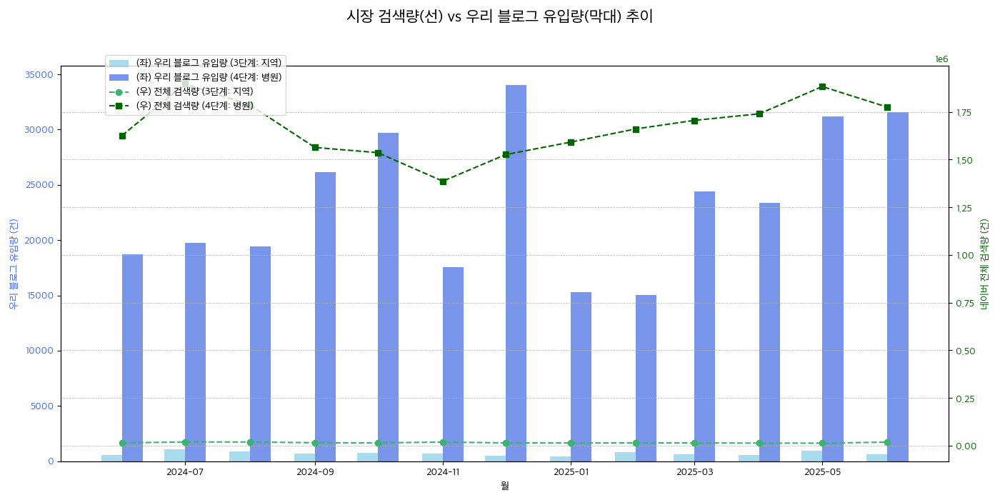

📊 분석 요약 및 핵심 제안
본 보고서는 블로그 유입 검색어, 성과 데이터, 포스트 데이터를 종합하여 우리 병원의 현재 마케팅 포지션을 진단하고, 데이터 기반의 구체적인 실행 전략을 제안합니다.
핵심 발견 (Key Findings)
- '동탄역' 키워드의 높은 효율성: '동탄' 전체보다 '동탄역' 키워드의 시장 점유율이 월등히 높아, 해당 지역 타겟팅이 매우 유효함을 확인했습니다.
- 시장 트렌드와 유입량의 동반 성장: 전체적인 시장의 검색량(3, 4단계)과 우리 블로그 유입량이 동반 성장하는 긍정적인 추세를 보이고 있습니다. 이는 우리의 마케팅 활동이 시장의 관심사와 잘 부합하고 있음을 시사합니다.
- '비용/보험', '후기' 검색 의도의 중요성: 블로그 유입의 상당수가 '비용'과 '후기' 관련 검색 의도를 통해 발생하고 있어, 이 두 가지 주제가 고객의 핵심적인 궁금증임을 재확인했습니다.
핵심 제안 (Action Items)
- '동탄역' + '충치/신경치료' 콘텐츠 강화: 가장 효율이 높은 '동탄역' 키워드와 시장 규모가 가장 큰 '충치', '신경치료'를 조합한 콘텐츠를 집중적으로 기획해야 합니다. ('동탄역 충치치료 비용', '동탄역 신경치료 후기' 등)
- '비용/보험' 및 '후기' 콘텐츠 포맷 다각화: 고객의 핵심 궁금증에 답하기 위해, '진료별 비용 총정리', '환자 케이스별 치료 과정 및 후기' 등 신뢰도를 높일 수 있는 포맷의 콘텐츠를 강화해야 합니다.
🗺️ 분석 1: 지역 시장 및 핵심 진료 분야 분석
1-1. '효자 지역 키워드' 월 평균 성과
Objective: 어떤 지역 키워드가 우리 블로그 유입에 가장 효과적인지 파악하여, 지역 타겟팅의 우선순위를 설정합니다. (월 평균 기준)
Finding: '동탄' 키워드가 월 평균 가장 많은 유입을 만들고 있지만, '시장 점유율' 측면에서는 '화성', '로덴치과' 등 더 작은 단위의 키워드들이 높은 효율을 보입니다. '동탄역' 역시 전체 검색량 대비 높은 점유율을 기록하며 중요 타겟임을 보여줍니다.
| local_label |
avg_monthly_search_volume |
avg_monthly_inflow |
related_query_count |
market_share |
| 내이튼치과 |
333102.0 |
23119.0 |
165 |
6.94% |
| 동탄 |
1087816.0 |
5337.0 |
967 |
0.49% |
| 치과 |
1351029.0 |
492.0 |
1003 |
0.04% |
| 동탄역 |
21708.0 |
37.0 |
119 |
0.17% |
| 화성 |
1490.0 |
34.0 |
57 |
2.25% |
| 동탄2 |
297712.0 |
23.0 |
171 |
0.01% |
| 내이튼치과 윤민정 |
238.0 |
21.0 |
23 |
8.67% |
| 오산 |
2701.0 |
14.0 |
67 |
0.51% |
| 동탄호수공원 |
396116.0 |
2.0 |
33 |
0.00% |
| 북광장 |
4328.0 |
1.0 |
10 |
0.02% |
| 로덴치과 |
25.0 |
1.0 |
2 |
5.23% |
| 목동 |
3765.0 |
1.0 |
12 |
0.01% |
| 나노치과의원 |
30.0 |
1.0 |
5 |
2.56% |
| 대구 |
40.0 |
1.0 |
8 |
1.35% |
| 더새로운치과 |
85.0 |
0.0 |
2 |
0.00% |
| 역 |
5.0 |
0.0 |
1 |
0.00% |
| 하나로치과 |
20.0 |
0.0 |
3 |
1.15% |
| 인천 |
10.0 |
0.0 |
2 |
1.54% |
| 이편한치과 |
270.0 |
0.0 |
2 |
0.09% |
| 이루다치과 |
30.0 |
0.0 |
6 |
1.03% |
| 이로운치과의원 |
17.0 |
0.0 |
3 |
0.92% |
| 나무치과 |
281.0 |
0.0 |
3 |
0.11% |
| 예나치과 |
15.0 |
0.0 |
2 |
2.56% |
| 영등포 |
5.0 |
0.0 |
1 |
3.08% |
| 아는치과 |
10.0 |
0.0 |
2 |
0.00% |
| 더바름치과 |
10.0 |
0.0 |
2 |
0.00% |
| 센트럴치과 |
15.0 |
0.0 |
3 |
2.05% |
| 서울 |
20.0 |
0.0 |
4 |
0.77% |
| 분당 |
15.0 |
0.0 |
3 |
0.00% |
| 부산 |
30.0 |
0.0 |
6 |
0.77% |
| 근처 |
30.0 |
0.0 |
6 |
0.76% |
| 대전 |
10.0 |
0.0 |
2 |
0.00% |
| 대표원장 |
10.0 |
0.0 |
1 |
0.00% |
| 대학병원 |
5.0 |
0.0 |
1 |
3.08% |
| CL치과 |
15.0 |
0.0 |
3 |
1.54% |
Action Item: '동탄역', '오산동' 등 상대적으로 높은 점유율을 보이는 세부 지역 키워드를 활용하여, '동탄역 직장인 임플란트'와 같이 더 구체적이고 타겟팅된 콘텐츠를 기획하여 틈새시장을 공략할 필요가 있습니다.
1-2. 핵심 진료 분야별 '지역(Local)' 월 평균 시장 점유율
Objective: 우리 병원의 핵심 타겟 시장인 '지역 내'에서 어떤 진료 분야에 강점과 약점이 있는지 월 평균 기준으로 진단합니다.
Finding: '충치치료', '신경치료'가 월 평균 검색량 기준 가장 큰 시장을 형성하고 있습니다. '심미치료'는 검색량은 적지만 매우 높은 시장 점유율을 보여, 해당 분야에서 우리 블로그가 강력한 영향력을 가지고 있음을 의미합니다.
| interest_areas_list |
avg_monthly_search_volume |
avg_monthly_inflow |
market_share |
| 미분류 |
571420.0 |
23092.0 |
4.04% |
| 충치치료 |
408216.0 |
53.0 |
0.01% |
| 신경치료 |
375745.0 |
463.0 |
0.12% |
| 치아보존술 |
327517.0 |
369.0 |
0.11% |
| 임플란트 |
10269.0 |
19.0 |
0.19% |
| 심미치료 |
3085.0 |
268.0 |
8.68% |
| 잇몸치료 |
1877.0 |
48.0 |
2.54% |
Action Item: 시장이 가장 큰 '충치치료'와 '신경치료' 분야의 지역 내 점유율을 높이는 것이 가장 시급한 과제입니다. '동탄 충치치료 잘하는 곳', '동탄역 신경치료 후기'와 같이 [지역명 + 진료명 + 검색의도] 조합의 롱테일 키워드 콘텐츠를 집중적으로 발행하여 시장 점유율을 끌어올려야 합니다.
🚦 분석 2: 브랜딩 퍼널(Funnel) 진단 및 최적화
2-1. '충성 고객' vs '신규 고객' 유입 채널 분석
Objective: 우리 블로그의 포스트들이 브랜드 인지 고객 유지(충성 고객)와 신규 고객 유치 역할을 각각 얼마나 잘 수행하는지 진단합니다.
Finding:
-
4단계(병원 인지) 고객 유입 상위 포스트 (브랜드 유지 역할):
| postId |
post_title |
stage |
total_inflow |
| 223127778693 |
정기검진, 이렇게나 중요합니다! 동탄 내이튼 치과 |
4단계:병원인지 |
31353 |
| 223205080746 |
"교정 중인데 이가 까맣게 변했어요." 변색 원인 및 치료 과정 동탄 내이튼 치과 |
4단계:병원인지 |
9259 |
| 223360812566 |
벌어지고 튀어나온 앞니, 동탄역 치과 에서 교정 없이 개선을 도와드렸던 방법은?! |
4단계:병원인지 |
7911 |
| 223829595540 |
잇몸에 물집 , 염증 덩어리 의심해 볼 수 있습니다 동탄동 치과 치근단 병소 치료 과정 |
4단계:병원인지 |
4978 |
| 223652586578 |
상악동 거상술 술식 측방 접근법을 통해 안전하게 임플란트 재식립 한 사례 동탄역 치과 |
4단계:병원인지 |
4974 |
-
2/3단계(정보/지역 탐색) 고객 유입 상위 포스트 (신규 고객 유치 역할):
| postId |
post_title |
stage |
total_inflow |
| 223277112963 |
동탄 치과 송곳니 충치는 레진으로 당일 치료 ! |
2단계:정보탐색 |
4343 |
| 223577753077 |
"이가 깨졌어요 발치 해야 되나요?"깨진 앞니 레진 수복으로 해결한 케이스 동탄동 치과 |
2단계:정보탐색 |
3084 |
| 223733898487 |
앞니 벌어짐 어떤 방법으로 해결할 수 있을까? 동탄2 치과 에서 자연스러운 모습으로 개선한 증례 |
2단계:정보탐색 |
1573 |
| 223462135488 |
동탄역 치과 "어른 유치, 작은 어린이 치아 이대로 괜찮을까요??" |
2단계:정보탐색 |
1272 |
| 223630259710 |
화성 치과 앞니 신경치료 후 잇몸 변색과 뿌리 염증이 나타났다? 치아 발치 후 브릿지로 해결한 사례 |
2단계:정보탐색 |
1079 |
Action Item: 신규 고객 유치 포스트와 브랜드 유지 포스트를 내부 링크로 연결하여, 우리를 처음 알게 된 고객이 자연스럽게 우리 병원에 대한 신뢰를 쌓고 충성 고객으로 전환될 경로를 설계해야 합니다. (예: '이가 깨졌어요' 포스트 말미에 '내이튼치과의 앞니 레진 치료 실제 후기' 포스트 링크 추가)
2-2. 시장 검색량(선) vs 우리 블로그 유입량(막대) 추이
Objective: 시장의 전체 검색량 트렌드와 우리 블로그의 유입 성과를 비교하여, 마케팅 활동의 효과를 입체적으로 분석합니다.
Finding:

Action Item: 녹색 선(시장 전체 검색량)이 상승하는 시기에 파란색 막대(우리 블로그 유입량)도 함께 상승하는 것은 매우 긍정적인 신호입니다. 만약 녹색 선은 오르는데 파란 막대가 정체된다면, 시장의 관심을 우리 블로그로 가져오지 못하고 있다는 의미이므로 해당 월의 포스트 전략을 재검토해야 합니다.
📝 분석 3: 콘텐츠 및 검색 의도 분석
3-1. 포스트별 실질적 '주제' 분석
Objective: 각 포스트가 실제로 어떤 주제(관심 진료 분야)로 시장에서 인식되고 있는지 파악하여, 콘텐츠의 역할을 재정의하거나 개선 방향을 설정합니다.
진단 필요: '관심 진료 분야(interest_areas)' 데이터의 17.41%가 '미분류' 상태입니다. 이는 원본 데이터 생성 단계에서 대부분의 검색어에 대한 관심 진료 분야가 추출되지 않았음을 의미합니다. 정확한 분석을 위해 선행 `apply_restructured_taxonomy.py` 스크립트의 LLM 기반 'interest_areas' 추출 로직 점검이 필요합니다.
Finding: 현재 데이터 기준, 아래는 각 포스트별로 가장 많은 유입을 발생시킨 관심 진료 분야입니다. 대부분 '미분류'로 나타나고 있어, 아래 결과는 제한적인 정보만을 제공합니다.
| postId |
post_title |
interest_areas_list |
total_inflow |
| 223127778693 |
정기검진, 이렇게나 중요합니다! 동탄 내이튼 치과 |
미분류 |
31336 |
| 223205080746 |
"교정 중인데 이가 까맣게 변했어요." 변색 원인 및 치료 과정 동탄 내이튼 치과 |
미분류 |
9296 |
| 223360812566 |
벌어지고 튀어나온 앞니, 동탄역 치과 에서 교정 없이 개선을 도와드렸던 방법은?! |
미분류 |
7894 |
| 223816356433 |
인레이 치료 후 발생할 수 있는 문제( 충치 , 치아 파절 ) 동탄역 치과 에서 원인과 해결 방법 알아봅시다! |
미분류 |
4986 |
| 223829595540 |
잇몸에 물집 , 염증 덩어리 의심해 볼 수 있습니다 동탄동 치과 치근단 병소 치료 과정 |
미분류 |
4978 |
| 223652586578 |
상악동 거상술 술식 측방 접근법을 통해 안전하게 임플란트 재식립 한 사례 동탄역 치과 |
미분류 |
4974 |
| 223260606003 |
신경치료를 받았던 앞니 색이 변했어요. 동탄치과 실활치 미백(walking bleach) 과정 |
미분류 |
3938 |
| 223619831819 |
치주염으로 인한 앞니 잇몸 퇴축, 치과 에서 치아 브릿지 교체와 치주 치료로 해결한 사례 |
미분류 |
3927 |
| 223595953482 |
동탄 치과 깊게 파고드는 충치 인레이 치료 과정을 통해 자연치 살리기 |
미분류 |
3802 |
| 223335804761 |
'앞니가 벌어졌어요!' 동탄치과추천 받고 오셨던 분, 레진 당일 수복 과정 |
미분류 |
3470 |
3-2. 검색 의도 심층 분석
Objective: 사용자들이 어떤 의도(카테고리 및 라벨)를 가지고 검색하며, 이를 통해 우리 블로그로 유입되는지 파악합니다.
Finding 1: 카테고리별 유입 성과
'신체부위' 카테고리가 가장 많은 유입을 발생시키고 있으며, '검색의도'와 '증상/상태'가 그 뒤를 잇고 있습니다. 이는 고객들이 특정 치아나 잇몸의 문제에 대해 구체적인 해결책(비용, 후기 등)을 찾으려는 경향이 강함을 보여줍니다.
| category |
total_inflow |
related_query_count |
| 지역/장소 |
378113 |
1867 |
| 관심진료 |
34827 |
4149 |
| 신체부위 |
28366 |
3303 |
| 증상/상태 |
23068 |
3113 |
| 의료/진료방식 |
3963 |
740 |
| 고객특성 |
2907 |
180 |
| 검색의도 |
2179 |
709 |
| 시간/시기 |
463 |
259 |
| 기타 |
92 |
88 |
가장 중요한 '검색의도' 카테고리 내에서는 '비용/보험'과 '병원/의사 추천' (후기, 잘하는 곳 등)에 대한 관심이 압도적으로 높습니다.
| label_name |
total_inflow |
related_query_count |
| 과정/기간 |
1207 |
178 |
| 원인 |
236 |
90 |
| 비용 |
93 |
65 |
| 의료진 |
88 |
15 |
| 잘하는 곳 |
77 |
76 |
| 보험 |
76 |
19 |
| 후기 |
73 |
29 |
| 가능성/방법 |
49 |
42 |
| 검진/진단 |
39 |
45 |
| 사진 |
39 |
32 |
| 정보 탐색 |
37 |
35 |
| 육안 확인 방법 |
34 |
4 |
| 제작과정 |
31 |
21 |
| 성공 |
17 |
12 |
| 방법 |
13 |
22 |
| 가능성 |
12 |
11 |
| 결과 |
7 |
4 |
| 부작용 |
5 |
3 |
| 가능 여부 |
5 |
4 |
| 관계 |
5 |
1 |
| 만족도 |
4 |
4 |
| 개수 |
4 |
4 |
| 진료 마무리 |
4 |
4 |
| 프랩 과정 |
3 |
3 |
| 교합 조정 |
3 |
3 |
| 단점 |
2 |
5 |
| 다른 치료/병원 |
2 |
4 |
| 성공 확률 |
2 |
3 |
| 의료진/전문가 |
2 |
2 |
| 동시진행 |
2 |
3 |
| 정보 |
2 |
2 |
| 건강보험 |
2 |
3 |
| 탐색 |
2 |
2 |
| 필요성 |
1 |
3 |
| 보험 청구 |
1 |
2 |
| 고민 |
0 |
2 |
| 검진 절차 |
0 |
2 |
Action Item: '비용/보험', '병원/의사 추천' 두 핵심 의도에 직접적으로 답변하는 콘텐츠를 시리즈로 기획해야 합니다. 예를 들어, '동탄 임플란트 가격, 보험 적용 시 실제 비용은?' 또는 '실제 환자가 말하는 내이튼치과 신경치료 후기'와 같은 제목의 콘텐츠는 높은 유입을 기대할 수 있습니다.